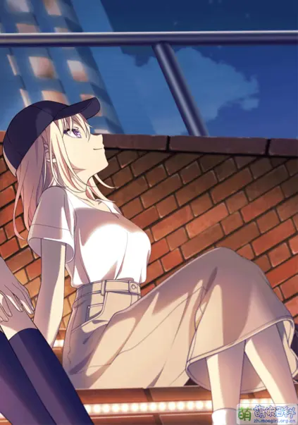
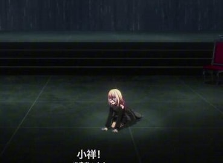

个人简介
Doloris 取自 Lacus Doloris（悲湖），意指悲伤。
担当：主唱 / 主音吉他手
生日：6月26日
星座：巨蟹座
花咲川女子学园高中1年级，和椎名立希、八幡海玲是同一个班级，因工作关系经常缺席。
偶像团体「sumimi」的吉他手，此时艺名为初华，负责作词作曲。
因其酷炫的外观而受欢迎，喜爱观星。受幼时相识的祥子邀请，加入了 Ave Mujica，担当作词。
代表色： #BB9955
CV： 佐佐木李子
三角初华 / Doloris（ドロリス）
Doloris 取自 Lacus Doloris（悲湖），意指悲伤。
担当：主唱 / 主音吉他手
生日：6月26日
星座：巨蟹座
花咲川女子学园高中1年级，和椎名立希、八幡海玲是同一个班级，因工作关系经常缺席。
偶像团体「sumimi」的吉他手，此时艺名为初华，负责作词作曲。
因其酷炫的外观而受欢迎，喜爱观星。受幼时相识的祥子邀请，加入了 Ave Mujica，担当作词。
代表色： #BB9955
CV： 佐佐木李子
三角初华自幼因私生女身份被禁止与丰川祥子接触，借用妹妹身份与祥子共度观星之夜后，怀揣着对祥子的憧憬前往东京发展。她以妹妹之名组成偶像团体sumimi，在祥子家变后因以为是自己试图擅自接触祥子导致清告被逐出而背负沉重负罪感。
高中时期，当初华收到祥子组建Ave Mujica的邀请时毫不犹豫地加入，将对祥子的情感寄托于乐队之中。在乐队面临危机时，她始终坚定维护祥子，甚至让出住所供祥子栖身。然而当祥子不告而别后，初华陷入迷茫，工作状态一落千丈。
得知祥子有意重组CRYCHIC后，初华产生强烈危机感，首次流露出占有欲。在若麦推动下，她直面内心情感，写下献给祥子的歌词。最终在祥子的引导下，初华勇敢挣脱身份枷锁，坦然接受真实自我，与祥子共同开启新的音乐旅程。
从活在他人影子下的“初音”，到找回自我的“初华”，她在Ave Mujica中不仅实现了音乐梦想，更完成了与过去和解的成长历程。

三角初华的姓氏来源存在多种推测。地名方面可能取自熊本县三角町、东京都三角山或广岛县三角岛；考虑到同团若麦姓氏取自目黑区地名，东京三角山的可能性较高。天文角度则可能源自"夏季大三角"，结合"初"字与"羽衣"同音，暗合牛郎织女传说，与剧中初华带出祥子演出服的情节相呼应。
初华与妹妹初音的名字中"初"字读音不同（初音为训读"はつ"，初华为音读"うい"），这种差异可能是制作组有意为之。
在Ave Mujica中代号"Doloris"意为悲伤，面具万寿菊花语同样象征悲伤，与角色设定相符。
官方已确认初华家乡为濑户内海小豆岛，剧中她对北斗七星的称呼使用当地方言。由于制作组早期暗示初华身怀秘密，衍生出大量假说：包括成真的双子替身说、私生女说，以及蜘蛛侠说（声优在愚人节cosplay佐证）、多重人格说等。
初华在动画第六、七集创下主角缺席纪录，被戏称为"初音未来"。关于妹妹的设定催生了她成为VTB仲町阿拉蕾或与三园夏洛特组乐队等二创猜想。
基于其温柔忠诚的性格与金色长发特征，二次创作中初华常被塑造成金毛猎犬的形象（大嘘）。此外，她频繁使用手机的习惯催生了"小手机真好玩"的梗和"初机"CP。
在2025年台北动物园豹猫征名活动中，"祥子""初华"组合获得第二名，印证了角色人气。